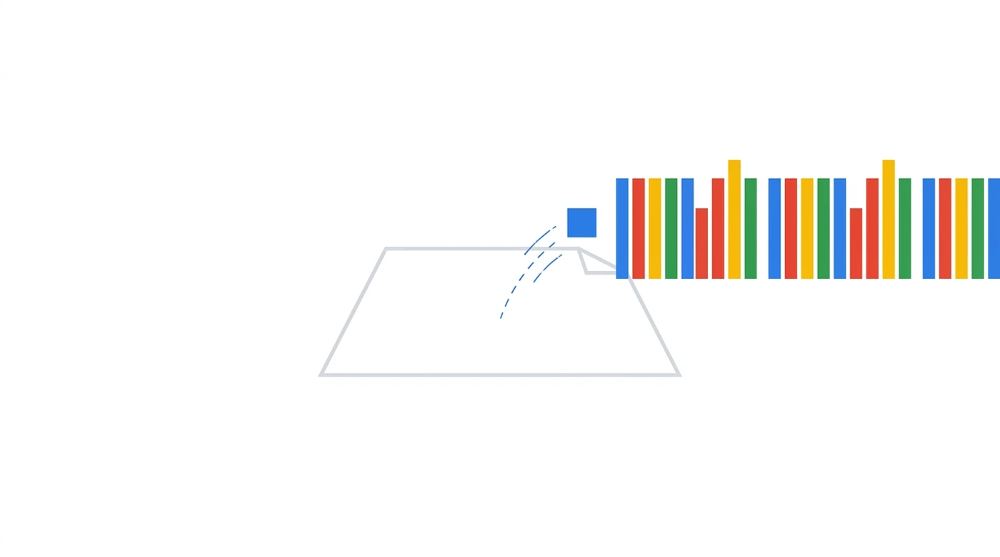
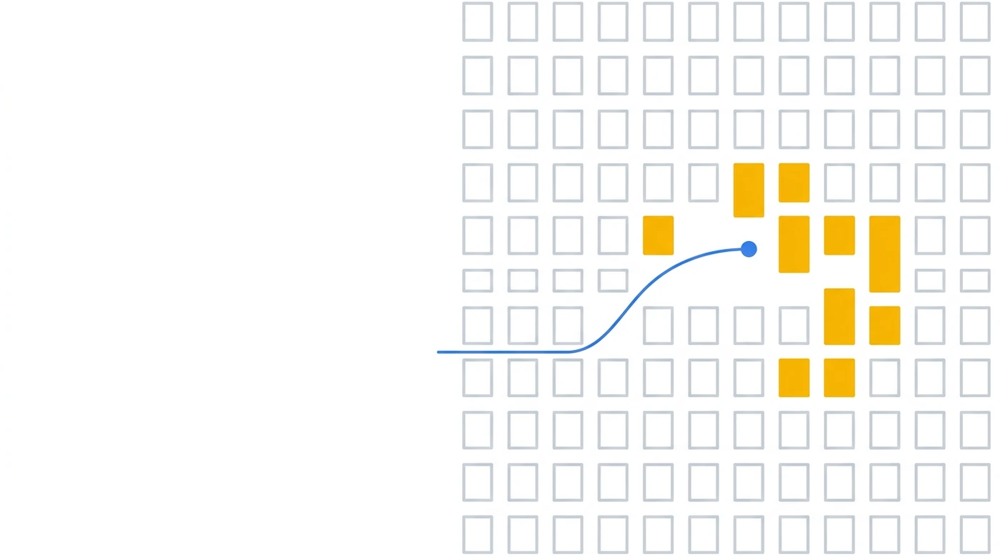
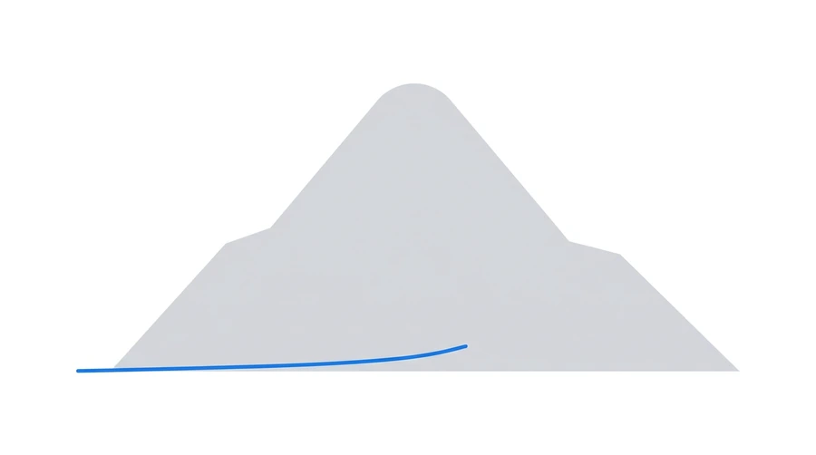
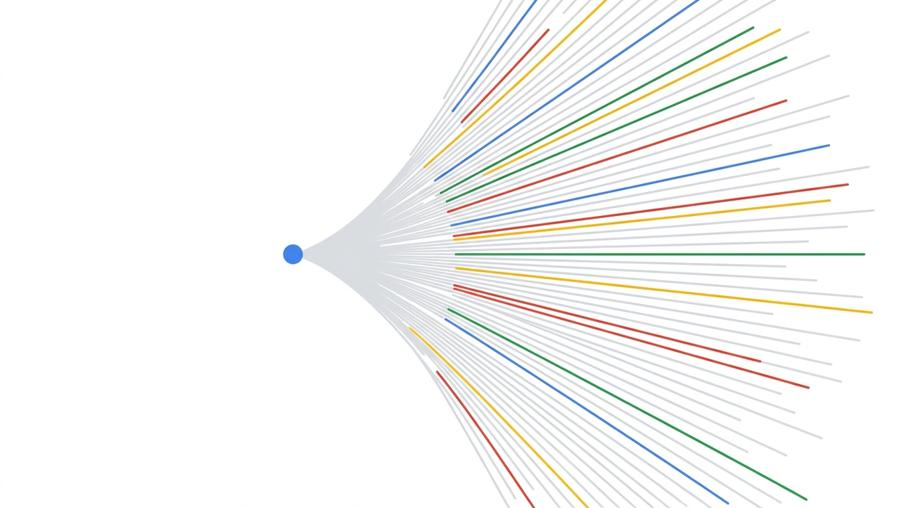

By the end, “why it needs a machine room” isn't a slogan but numbers you computed yourself.
This lecture has instructor notes (a script).
They cover how to teach: each segment's goal, where to pause, common misconceptions, answers to likely questions. The content is here.
Two uses. Presenting: the notes give lines, figure cues and timing. Self-study: hand the whole script to an AI; it becomes a TA that knows the full background and how to teach it, and walks you through.
Feed DeepSeek V3 a 128K-token document, one prefill:
it reads everything, generates nothing yet.
After that pass, one thing must stay in HBM:
every later token looks back at the K and V of every earlier token in every layer.
That is the KV cache.
How large is the one this prefill leaves?
For scale: one TPU v7 device has ~94.74 GiB of usable HBM.
(Throughout, “device” means one such device; each v7 chip holds two.)
The answer is 8.58 GiB:
9% of one device.
The other three are real too: four ways of storing K and V, four generations of attention. Same model, same document;
only “values stored per token per layer” changes, and the answer spans 128×.
All of Step 2 lives in the gaps between these four.
Where 8.58 GiB comes from: three steps, one multiplication each.
576 values × 2 B
576 = 512 (compressed KV) + 64 (the RoPE part)
× 61 Each layer stores its own; unavoidable
× 131,072 9% of one device
The four options are four ways to store K and V, all at 128K, 61 layers, bf16:
| Option | Scheme | Per token per layer | Full length | vs MHA |
|---|---|---|---|---|
| ~500 GiB | MHA · each of 128 heads stores its own (classic) | 32,768 | 488.00 GiB | 1× |
| ~30 GiB | GQA · 128 heads in 8 groups, 16 heads share one copy (Llama-style) | 2,048 | 30.50 GiB | 16× |
| ~9 GiB ✓ | MLA · compressed into one 512-dim latent vector (V3) | 576 | 8.58 GiB | 56.9× |
| ~4 GiB | MQA · all heads share one copy (smallest) | 256 | 3.81 GiB | 128× |
MLA sits between GQA and MQA in size, yet should beat both on quality. (The paper never pits MLA directly against GQA or MQA; this is inferred by chaining two of its ablation tables. See Step 2.) MQA is smaller only because all heads share one copy; that expressiveness is gone for good. MLA saves nearly as much without sacrificing any head. That is Step 2's thread. (The GQA row assumes 8 groups, common in Llama models, not a V3 configuration. Linear and sliding-window attention are omitted: they change whether each token is stored, not how much.)
The point isn't the numbers but deriving them yourself, and the counterintuitive things on the way. This lecture follows one token end to end, doing the math at each step.
The GPT-3 175B era is long gone.
Most later open models start from it. To show what a modern LLM looks like, dissecting this one beats surveying ten.
MLA shrinks the KV cache, fine-grained MoE the active parameters, FP8 the training cost.
HBM, compute, bandwidth: three bottlenecks, three answers. This course builds that chain.
A parameter count means nothing alone, only side by side.
2800 ÷ 104 = 26.9×, below V4's 32.7×.
It spends sparsity on expert granularity: 16 of 896 experts,
1.8% lit (V3: 8 of 256, 3.1%).
Size, sparsity and granularity are three separate rankings.Every step uses these, unchanged. Edit the top console and every number follows.
131,072 tokens
One sequence first, then multiply
2 B for weights and activations
Backward, optimizer state: Topic 4
All later math draws from this table, straight from the official config.json; nothing estimated.
| Backbone | Value | Notes |
|---|---|---|
hidden_size | 7,168 | Residual stream width, d |
num_hidden_layers | 61 | |
first_k_dense_replace | 3 | First 3 dense, other 58 MoE |
vocab_size | 129,280 | |
max_position_embeddings | 163,840 | YaRN-extended from 4K |
tie_word_embeddings | false | ⚠️ In, out: two matrices |
num_nextn_predict_layers | 1 | MTP |
| Attention · MLA | Value | Notes |
|---|---|---|
num_attention_heads | 128 | |
q_lora_rank | 1536 | Q is low-rank too |
kv_lora_rank | 512 | ⭐ KV → 512 dims |
qk_nope_head_dim | 128 | Per-head QK is really 192 dims |
qk_rope_head_dim | 64 | |
v_head_dim | 128 |
| MoE | Value | Notes | MoE | Value | Notes |
|---|---|---|---|---|---|
n_routed_experts | 256 | moe_intermediate_size | 2048 | ⭐ Fine-grained | |
n_shared_experts | 1 | Every token uses it | intermediate_size | 18,432 | Only the first 3 dense layers |
num_experts_per_tok | 8 | top-8 | n_group / topk_group | 8 / 4 | Group-limited routing |
scoring_func | sigmoid | Not softmax | topk_method | noaux_tc | Auxiliary-loss-free balancing |
Text in, probability distribution out. Seven steps between.

No compute, one table lookup. Yet a chunk of HBM is gone.
First, context: on one axis with its contemporaries' vocabularies, it is nothing special.
vocab_size in each model's public config.json.
Llama 3's 128,256 and V3's 129,280 are practically one point; their markers overlap.A vocabulary matrix's size depends only on vocab × d, not on the layer count. So the deeper and larger the model, the smaller its share.
So the “bigger tables” cost in the figure barely holds V3 back. The real costs are undertrained rare words and a more expensive output softmax.
SolidGoldMagikarp is one).
Remember d = 7,168, the model's main highway width; every later step uses it. Why: 7,168 = 128 × 56 = 256 × 28. It divides evenly both ways, so neither TPU nor GPU wastes compute on padding.
The constraint (hard): it must align with the hardware's matrix units. A TPU MXU is a systolic array, 256 × 256 on v6e and TPU7x, 128 × 128 on earlier generations. NVIDIA recommends dimensions in multiples of 8 for FP16 and of 64 on A100. 7,168 divides by both 128 and 256, so neither side pads. No one picking this number escapes it.
The trade-off (soft): for a fixed parameter budget, wider or deeper. Every model makes that call afresh, and DeepSeek has never publicly said how it arrived at 7,168.
Fetch the token id's row from the 129,280 × 7,168 table. On this path, compute is zero. But real frameworks don't always do a lookup; expand below.
Mathematically it is equivalent to a one-hot vector times the embedding matrix. Intuitively, nobody would do that multiply: it costs 129,280 multiply-adds per output value. Yet real training frameworks ship both paths, behind an explicit switch.
In base.yml the switch defaults to false, i.e. gather.
But 34 production configs in the repo explicitly turn it on, and none explicitly turns it off. So do GPU model configs (llama3, mixtral), not just TPU ones. Default and actual usage are opposites.
Precisely: “zero compute” holds only for the gather path. The other compiled path isn't zero; the denominator is just large enough that 0.46% vanishes into the noise. Why spend that compute at all? It turns an irregular, sparse row fetch into a regular dense matmul, shardable along the vocabulary dimension, and makes the backward pass a matmul too. That is the most plausible explanation, not one stated in any public source; don't treat it as settled.
Memory is the same on both paths: the table stays resident and the fetched tensor takes space too (figure on the right).
In standard MHA, hidden = heads × head_dim must hold.
In V3 it doesn't, by a wide margin.
o_proj folds back to 7,168.o_proj is the largest weight in an MLA layer (117.44M, 63% of the layer).
Nothing special: it just spans the gap above, 16,384 in and 7,168 out.
More important: once that gap opens, the head count and d can be set independently. That is what lets Step 2 keep all 128 heads.
The heart of the lecture and of V3. Budget 15 minutes.
Attention lets every token look at all earlier tokens. To avoid recomputing their K and V, we keep them around. That is the KV cache. Its size:
Multiply two linear terms and you get a disaster. 4K → 128K tokens is 32×, then × 61 layers. That is why long context forces attention to change.
“Disaster” is vague. Build it step by step.
32,768 values × 2 B negligible
× 61 still harmless
× 131,072 this alone fills 5.2 devices
Draw one line per storage scheme. Both are straight, but their slopes differ by 56.9×: same origin, ever-widening gap.
Every attention variant turns the same knobs; each generation changes how much a token stores. Split “values per token per layer” once more and they appear:
| Knob | Effect | Who |
|---|---|---|
| ① Copies KV heads |
128 → 8 → 1. Straight division, the strongest. Cost: Q heads share one K/V; lost expressiveness never returns | MQA, GQA |
| ② Width head dim |
Rarely changed; most settle on 128. Sets what one head holds: narrower is dumber. Kernels fit few widths; an odd one saves memory but runs slowly | — |
| ③ Layers layers |
Layers share KV, or only some see full length (sliding window). Whether you store, not how much: not in the four-generation table | cross-layer sharing window attention |
Compress on write, expand on read. Not 128 per-head copies of a token's KV but one 512-dim latent; at attention time a matrix expands it to 128 heads.
Why position needs its own path. The angle depends on position. Rotate, then compress, and position leaks into the latent; stuck between two matrices, the rotation can't be moved out: matmul doesn't commute.
Precisely: correctness survives; it trains and runs. A valuable inference shortcut breaks: each new token recomputes every earlier K. Which shortcut: see the shape chain below.
So V3 splits each head: 128 dims without position (compressed), 64 dims with it (stored raw).
Almost everyone first computes 7,168 ÷ 128 heads = 56. That hides two misconceptions; the second is deeper.
7,168 × head_dim matrix into its own space.The section rests on this. See it, and “why wider heads?” answers itself: each head's matrix is 7,168 × d_h; d_h was always free.
o_proj maps that back into the residual stream. Right: the KV cache each design pays.A choice, not a definition, in the 2017 Transformer paper. §3.2.2 writes W^O ∈ R^(h·d_v × d_model): the two never had to match.
The next sentence: “In this work we employ h = 8 … we use d_k = d_v = d_model/h = 64.” “In this work”: a chosen value, not a rule. The reason is plain:
Seven years of copying made it intuition. It was only a convention.
In standard attention, wider heads cost cache: each head stores K and V, 2 × heads × head_dim. Width and cache are locked, linearly.
MLA cuts the lock. The MLA paper's Table 1 gives all four cache formulas; MLA's is (d_c + d_h^R) × layers, no head count, no head dim.
Evidence: DeepSeek-V2, MLA's debut, has a 5,120 residual stream but 128 × 128 = 16,384 attention, 3.2×, bolder than V3. (DeepSeek never claims causation, but two generations alike is hardly coincidence.)
Benefits are half the story. Widening adds three costs; another design cancels the third.
q_lora waist,” not another attention. Green, below, is what shipped.192 ÷ 128) for MLA's separate 64 RoPE dims.7,168 × (128×128) = 117.44M, 2.29×, same as o_proj, and yellow stops at the line.| Cost | Equal width | Widened | Result |
|---|---|---|---|
| ① Attention FLOPs QK and AV have different widths; count them separately |
QK 56 + AV 56 = 112 |
QK 192 + AV 128 = 320 |
2.86× genuinely paid |
② o_proj weightsmust bridge the 16,384 → 7,168 gap |
7,168 × 7,168 51.38M |
16,384 × 7,168 117.44M |
2.29× 63% of a layer |
| ③ Q projection weights each of 128 heads needs a 7,168 × d_h matrix |
7,168 × (128×56) 51.38M |
Widening only (plain MHA) 7,168 × (128×128) 117.44M. RoPE rotates within these 128 dims; no 192 anywhere |
2.29× pure widening cost |
| ③ cont.: but V3 uses MLA. RoPE doesn't rotate those 128 dims; it gets 64 dims of its own | — | V3's actual shape, single-step projection 7,168 × (128×192) 176.16M |
another ×1.5 would total 3.43× |
What ③ actually does: detour through q_lora7,168 → 1,536 → 128×192, with a narrow waist in the middle |
11.01M + 37.75M = 48.76M |
3.61× under one-step 5.1% below equal width | |
Check: 7168×7168 = 51,380,224 (note 128×56 = 7,168,
so at equal width the Q projection is the same size as o_proj); 7168×16384 = 117,440,512,
117.44 ÷ 51.38 = 2.29; 7168×24576 = 176,160,768,
176.16 ÷ 51.38 = 3.43; 11.01 + 37.75 = 48.76;
176.16 ÷ 48.76 = 3.61; 48.76 ÷ 51.38 = 0.949.
How the two parts of ③ multiply: 2.29 × 1.5 = 3.43, where
1.5 = 192 ÷ 128. That part exists only with MLA.
Why ① is 2.86, not 2.29: attention's two matmuls have different widths.
QKT runs at qk_head_dim = 192, AV at
v_head_dim = 128, so
(192+128) ÷ (56+56) = 320 ÷ 112 = 2.857.
Every FLOP figure on this page is computed this way, per segment;
estimating with a single 16,384 under-reports attention compute.
kv_lora_rank = 512 saves KV cache (it is what's stored);q_lora_rank = 1536 doesn't: Q is never cached.q_a_proj row.d_model/h to save it. V3 knowingly buys expressiveness with compute: no free lunch.o_proj, 117.44M, is a layer's largest MLA block, hence top of the five-row table.
[128K, 7168] to Q / K / VNow every step in the layer. In and out: [128K, 7168]. Between, three very different paths: Q, K, V.
512 + 64 = 576 values per token per layer.
k_pe has 1 head, shared by all 128: 64, not 128×64.kv_a_proj actually outputs
[c_KV 512 | k_pe 64]; k_pe is drawn left
to sit by k_nope without crossing lines.
② Weights are [in_dim, out_dim], as in the code's nn.Linear(in, out).Q: two projections, narrow waist. q_a_proj takes 7,168 to 1,536, Q's latent; after RMSNorm, q_b_proj lifts it to 24,576; a view makes 128 heads × 192.
192 = 128 (unrotated) + 64 (rotated).q_b_proj has shape [1536, 128×192] = [1536, 24576].
128×128 = 16,384 is the output-side width (v_head_dim × heads), at o_proj's input, not here.
Then each head's 192 dims split: first 128 (q_nope) untouched, last 64 (q_pe) get RoPE. Rejoined, query_states is final: [128K, 128, 192].
No byte of Q is cached. Its compression only saves weights and training activations (see the cost table).
K and V share one down-projection. kv_a_proj_with_mqa takes 7,168 to 576, split at once: first 512 c_KV (shared K/V compression), last 64 k_pe (the position strip).
k_nope, value, key_states) is computed on the fly, never stored.(d_c + d_h^R) × layers,
with neither head count nor head dim in it.
After RMSNorm, kv_b_proj lifts c_KV to 32,768; a view makes 128 heads × 256, halved: first 128 k_nope, last 128 are V. value_states is final: [128K, 128, 128], never touching RoPE.
k_pe, after RoPE, is broadcast, one copy, to all 128 heads and joined to each head's k_nope: key_states is final: [128K, 128, 192], matching Q.
MLA's most convoluted, most skipped part. Why not encode position across the whole vector? Because the cache just saved would be given right back.
c_KV.Note the last sentence, we must recompute the keys.
The paper says “must recompute,” not “will compute the wrong answer.”
What breaks is efficiency, not correctness. This matters at the podium:
say “the result would be wrong” and anyone who knows the material will correct you.
Split each head's vector into two jobs:
| Segment | Width | RoPE? | Role |
|---|---|---|---|
q_nope / k_nope | 128 | ❌ no | Content; keeps matrices foldable |
q_pe / k_pe | 64 | ✅ yes | Position; all in these 64 |
| Concat & score | 192 | — | score = content + position, one dot product |
Dot products add: [a;b]·[c;d] = a·c + b·d. One 192-dim dot product equals “content similarity” plus “positional relevance,” computed apart. No interference; each half keeps its math.
[128K, 1, 64]).128 × 64 = 8,192: 576 → 8,704, and MLA would be pointless.
RoPE(W^QR · c_Q): first project a vector from the content, then rotate it.
The 128 heads use different rows of that projection matrix, so the angle is the same, but what gets rotated differs.R_t transpose × R_s = R_(s−t)):
a_i differs per head,
so each head gets a different “distance → score” curve.
Some heads can focus on the nearest tokens; others can look far back for a match.
Share one copy and all 128 heads get an identical position term.modeling_deepseek.py) materializes K and V, then runs attention. The figure draws that path: the math definition.o_proj is an equivalent rewrite done only by fast inference engines. Leaving room for it is why RoPE was isolated at design time.W^UK into W^UQ, and
W^UV into W^O. Therefore, we do not need to compute keys and
values out for each query.”
A natural question after the chain: the weights are a few big matrices from start to finish,
and view never moves a single value. So are the 128 heads just bookkeeping?
q_b_proj is one block, 1,536 × 24,576;
kv_b_proj is one block, 512 × 32,768;
o_proj is one block, 16,384 × 7,168.view / reshape only changes how data is read: zero data movement, zero compute.Precisely: a head has a lifecycle.
At the view it only gets a name.
It is truly alive during scoring and softmax.
At o_proj it dies: that 16,384 × 7,168 matrix
is the only place the 128 heads ever exchange information.
Both ends are single blocks; only the short stretch in the middle is real.
The hardware shows it too: the projections are large, regular matmuls, the kind accelerators like best. Scoring is batch × 128 small matmuls batched together, with inherently lower arithmetic intensity, one reason attention has long been a performance bottleneck.
56.9× looks like magic; magic has a trick. Most of it isn't compression, just not being wasteful.
32,768 ÷ 7,168 = 4.57,
7,168 ÷ 576 = 12.44, 4.57 × 12.44 = 56.9.Standard MHA stores 2 × 128 heads × 128 dims = 32,768 values per token per layer.
Where do they come from?
All from the same 7,168-dim input. K and V are each a 7,168 × 16,384 matrix times h.
A 7,168 × 16,384 matrix has rank at most 7,168.
h and each new token re-multiplies every earlier K and V. Memory saved, compute paid.The rest, 7,168 → 576, 12.44×, is real and lossy, but compresses rank, not value count.
c_KV as a 512-wide bus all 128 heads read from. Each reads via its own matrix and gets something different (diversity intact), but none gets what isn't on the bus.k_pe's 64 dims bypass the bus, straight from h, the paper's eq. (15), k^R = RoPE(W^KR · h). Position stays off the bus, for the absorption reason above.MLA's bet: the 128 heads together need at most 512 information channels.
| Benchmark | Small MoE MHA | Small MoE MLA |
Large MoE MHA | Large MoE MLA |
|---|---|---|---|---|
| Total params | 15.8B | 15.7B | 250.8B | 247.4B |
| KV cache / token elements |
110.6 K | 15.6 K | 860.2 K | 34.6 K = 4% of MHA |
| BBH | 37.9 | 39.0 | 46.6 | 50.7 |
| MMLU | 48.7 | 50.0 | 57.5 | 59.0 |
| C-Eval | 51.6 | 50.9 | 57.9 | 59.2 |
| CMMLU | 52.3 | 53.4 | 60.7 | 62.5 |
Source: DeepSeek-V2 paper, Table 9. Same scale, same architecture, only the attention mechanism swapped. The small model trained on 1.33T tokens, the large one on 420B tokens. The large model wins all four; the small one wins three and loses one (C-Eval 51.6 → 50.9; say this out loud).
128 × 128 = 16,384
internally, 2.29× the residual stream. So the comparison is closer to
“narrow bottleneck + extra-wide heads” vs. “no bottleneck + regular heads.”h to K/V;Everything so far prepared these three tensors. Now attention does its actual work.
Intuition: at a sentence's fifth word you glance back at the first four and judge which matter most. Scoring computes that, with 128 heads applying their own criteria at once.
original_max_position_embeddings = 4096,
factor = 40, 4,096 × 40 = 163,840),
the scale is also multiplied by mscale²:* mscale * mscale after
softmax_scale = q_head_dim^(-0.5) in the reference implementation modeling_deepseek.py,
and the definition of yarn_get_mscale().
Also, 163,840 is the config's position limit, while 128K is the advertised usable length; they differ.
⑤ Weighted sum, ⑥ concatenate, exit. Step ④'s weights sum V; each head emits 128 dims. Concatenated: 16,384, which o_proj folds to 7,168 into the residual stream.
o_proj is the largest matrix in the layer (117.44M, about 60% of an MLA layer),
and the only place heads exchange information; before it, each computes alone.
Five weight matrices per layer; one is ~60% alone. The bars tell it; numbers are in the expander below.
| Matrix | Shape | Params | Role |
|---|---|---|---|
q_a_proj | 7,168 × 1,536 | 11.01M | Q down to low rank. Saves parameters, not cache |
q_b_proj | 1,536 × (128×192) | 37.75M | Q back up to 128 heads |
kv_a_proj | 7,168 × 576 | 4.13M | ⭐ Compress to 512, plus a separate 64-dim RoPE output |
kv_b_proj | 512 × (128×256) | 16.78M | ⭐ Back up to K and V for 128 heads |
o_proj | (128×128) × 7,168 | 117.44M | Output projection. The largest block in the layer: compresses the 16,384 concatenated dims of 128 heads back to 7,168 |
| Total per layer | 187.11M | × 61 layers = 11.41B | |
Check: 16384×7168 = 117,440,512;
1536×24576 = 37,748,736; 512×32768 = 16,777,216;
7168×1536 = 11,010,048; 7168×576 = 4,128,768.
Total 187,105,280 = 187.11M, 117.44 / 187.11 = 62.76%.
131,072 tokens × 61 layers × 576 × 2 B
32,768 values per token per layer
This gap is why MLA exists.
That's what is stored. Something transient, made during compute, is far scarier.
Every token scored against every token: a sequence length × sequence length matrix, per head.
Two parts of attention are quadratic in length: scores (QKᵀ) and the weighted sum (AV). All else (projections, MLP, MoE) is linear.
Negligible when short, all-consuming when long. The crossover is computable.
index_topk = 2048, in V3.2's own config). At 128K that's 1.6%; quadratic becomes linear.first_k_dense_replace = 3: V3's first 3 layers are ordinary MLPs.
Dense first: it shows what MoE saves.
Widen, open a valve, project back. Three matrices, each 7,168 × 18,432: 396.36M parameters per layer, 1.19B for all three.
The shapes are fixed, independent of input and sequence length. All four advantages below follow.
⊙ is an elementwise multiply, not a matmul:
two 18,432-dim vectors multiplied position by position give another 18,432-dim vector.
SiLU(z) = z · σ(z); the config field is
hidden_act: "silu".
| ① Every token takes the same path | → static shapes |
| ② One big matmul | → high utilization, MXU's favorite |
| ③ No communication to assign work | → no scheduling overhead |
| ④ Compiler plans it all ahead | → no runtime uncertainty |
MoE keeps none of them; we'll revisit each. In Step 4 they become: shapes unknown until routing ends (the dropless section wins this back); one matmul shattered into 257; two extra all-to-alls; a compiler reserving for the worst case.
The most common interruption here, and a fair one. A classic MLP has only two: widen, fixed nonlinearity, project back. But that nonlinearity is fixed: one rule for every input and channel.
SwiGLU widens twice: one copy is the valve, one the flow, multiplied elementwise. Which channels pass, and how much, becomes learned and input-dependent.
The key isn't SiLU. It's the multiply.
The same paper's Bilinear variant multiplies two paths with no activation:
a strict quadratic form in x.
It still beats every activation-only swap. Expressiveness comes from multiplying two linear maps, not a cleverer activation.
One experimental table backs this. Eight variants, equal parameters and compute: watch the two groups.
| Variant | Matrices | 65,536 steps | 524,288 steps |
|---|---|---|---|
| FFNReLU baseline | 2 | 1.997 | 1.677 |
| FFNGELU | 2 | 1.983 | 1.679 |
| FFNSwish | 2 | 1.994 | 1.683 |
| FFNGLU | 3 | 1.982 | 1.663 |
| FFNBilinear ⭐ no activation | 3 | 1.960 | 1.648 |
| FFNReGLU | 3 | 1.953 | 1.645 |
| FFNSwiGLU used by V3 | 3 | 1.944 | 1.636 |
| FFNGEGLU | 3 | 1.942 | 1.633 |
Held-out log-perplexity; lower is better. Columns: 65,536 and 524,288 training steps. Both split into the same two groups: the result doesn't hinge on one training budget.
| Model | hidden_act | Variant | Inner width ÷ residual stream |
|---|---|---|---|
| Llama 3 8B | silu | SwiGLU | 3.50× |
| Mistral 7B | silu | SwiGLU | 3.50× |
| Qwen3 8B | silu | SwiGLU | 3.00× |
| Gemma 2 9B | gelu_pytorch_tanh | GEGLU | 4.00× |
| DeepSeek V3 (first 3 layers) | silu | SwiGLU | 2.57× |
All from each model's config.json. It also shows something non-obvious: few models follow the “× 2/3” rule (4× → 2.67×) today. Llama 3 and Mistral use 3.5×, Gemma 2 a full 4×, all much wider. V3's 2.57× is the closest to the rule, and the leanest here. So “V3 back-solved 18,432 from parameter parity” is plausible, but it is our reading. Models following the rule are now the minority.
The other sure question. The inner width shrinks, by a rule fixed in that paper.
A clean number that fits all three. Each checks out arithmetically; the paper claims none.
| Constraint | Check | Fit |
|---|---|---|
| ① Exactly 9 experts = 8 routed + 1 shared |
9 × 2,048 = 18,432 |
Exactly equal one dense layer = what one MoE layer actually activates per token |
| ② Aligned to the accelerator's matrix unit | 18,432 ÷ 256 = 72 |
Divides evenly the 2/3 rule's 19,114.67 isn't even an integer |
| ③ The paper's 2/3 rule | 28,672 × 2/3 = 19,114.67 |
Close, but not on it V3 is 0.643×; the rule is 0.667× |
① matters most: it is too exact to dismiss as coincidence. The MLP a token passes through in V3's first three layers and the 9 experts it activates in the other 58 layers are equal in parameters and compute, matrix for matrix. From first layer to last, per-token MLP compute is an almost flat line.
Keep the word “almost”: an MoE layer also has a router,
7,168 × 256 = 1.84M, 0.46% of 396.36M.
Precisely: “the experts match exactly, plus 0.46% for the router,” not “not one parameter more.”
Mind the wording. “Equal” is verifiable;
“so that's how they chose it” is interpretation.
The V3 paper gives only the two numbers, intermediate_size and moe_intermediate_size;
it never says their relationship was deliberate.
18,432 to 2,048 (moe_intermediate_size).
Nothing new to learn next step; watch width and count.
The popular answer: “Early layers do generic work; nothing to specialize.” Plausible, but not DeepSeek's reason. The real story: a chain with a broken last link.
In the whole chain, only the DeepSeekMoE paper gives a reason, in one sentence:
Note we observe: an empirical observation, not a derivation. The paper doesn't explain why the first layer in particular, and the next two generations never elaborate.
The paper's 145B model does the same, without restating the reason.
DeepSeek-V2 says Following Dai et al. (2024), we substitute
all FFNs except for the first layer; DeepSeek-V3 says
We substitute all FFNs except for the first three layers.
The change from 1 to 3 gets not a word of explanation.
That chain is DeepSeek's alone. Contemporary MoE
config.json files disagree widely: some keep 3 layers, some 1, many none.
| Model | Layers | Leading dense | Source |
|---|---|---|---|
| DeepSeekMoE 16B | 28 | 1 | Paper: the only one giving a reason |
| DeepSeek-V2 | 60 | 1 | first_k_dense_replace: 1; paper: “following” prior work |
| DeepSeek-V2-Lite | 27 | 1 | first_k_dense_replace: 1 |
| DeepSeek-V3 | 61 | 3 | first_k_dense_replace: 3, no explanation |
| GLM-4.5 | 92 | 3 | first_k_dense_replace: 3, same as V3 |
| Kimi K2 ⭐ | 61 | 1 | first_k_dense_replace: 1:
copies V3, but changed this back |
| Qwen3-235B-A22B | 94 | 0 | mlp_only_layers: []: all 94 layers are MoE |
| Mixtral 8x7B | 32 | 0 | No such field |
| MiniMax-M2 | 62 | 0 | No dense prefix; shared_intermediate_size: 0
no shared expert either |
Every row except DeepSeekMoE 16B (paper text) is read directly from that model's Hugging Face config.json
(the DeepSeek-V2 row also quotes the paper).
architectures field reads DeepseekV3ForCausalLM,
with hidden_size 7168, intermediate_size 18432,
moe_intermediate_size 2048, q_lora_rank 1536,
kv_lora_rank 512, qk_nope_head_dim 128, qk_rope_head_dim 64,
num_hidden_layers 61. Not one shape on this page changed.first_k_dense_replace went from 3 back to 1.
A team that copied this closely changed this one parameter: it is no architectural necessity, just a value each lab tunes by trial.
Up front: this explanation is not in the paper; it is our inference.
A router is a linear projection of the hidden state followed by top-k, so tokens with similar hidden states necessarily go to the same experts. In the first layer the hidden state, not yet mixed by attention, is essentially the embedding plus some positional information. The same word looks nearly identical in any context.
So in the first layer the router degenerates into assignment by vocabulary ID.
High-frequency words (commas, the, “of”) dominate and flood the same expert in batches. The load can't balance; the cause is the data distribution itself. The aux loss has to fight it, so slow convergence is no surprise.

These 58 layers hold 97.8% of all parameters.
That is what “the life of a token” means: all 58 MoE layers triage afresh, so each token traces its own path.
First, the MLP holds most parameters: per the tables above, 187M per MLA layer, 396M per dense MLP, 11.32B per MoE layer. Second, the MLP is a pile of independent problems: it acts on each token alone, so tokens can safely take different routes. Attention exists to let tokens see each other; it can't be split.
first 3 layers' width
just 1/9 of dense
≈ 4×10¹⁴ ways to split work
Same activation budget: smaller, more numerous experts, more combinations. 8 big experts, top-1: 8 options. 256 small ones, top-8: astronomical. That is the whole case for fine-grained MoE.
Every token needs grammar and common knowledge. Without a shared expert, all 256 routed experts would each learn them: 256 copies of the same knowledge. V3 puts them in 1 shared expert that every token passes, freeing the routed experts to specialize.
7,168 × 256 = 1.84M, 0.46% of 396.36M.
So: not one extra expert FLOP, plus a half-percent triage fee.)9 × 2,048 = 18,432,
and intermediate width alone fixes all three matrix shapes.
9 × 2,048 = 18,432 is an identity;
both lines use V3's public config (intermediate_size,
moe_intermediate_size, num_experts_per_tok,
n_shared_experts).No, because they happen at two different moments. “Doesn't sum to 1” refers to scoring: each of the 256 scores is computed on its own, and none affects another. “Normalized to 1” refers to after selection: the proportions are redistributed among the chosen 8 only.
So what actually changes between softmax and sigmoid?
Step ①. Softmax's denominator covers all 256 experts, so raising any one expert's score
pushes down the other 255: a forced zero-sum competition.
Sigmoid has no such denominator; each expert independently says “I'm good at this token.”
Competition is deferred to the “rank and take the top 8” step instead of being baked into scoring.
V2 used softmax; V3 switched to sigmoid, as the paper states explicitly.
Where the 2.5 comes from: routed_scaling_factor in the config.
Normalization pins the sum of the 8 weights to 1, and the shared expert's branch has a coefficient of 1,
so the combined output is small relative to the residual stream; a constant greater than 1 restores the branch's magnitude.
That is our reading. The coefficient appears only in the open-source config and implementation, not the paper's formulas.
| Design | Value | Why |
|---|---|---|
| Scoring | sigmoid |
Softmax makes the 256 scores compete and sum to 1; sigmoid scores each independently: no zero-sum |
| Groups | n_group=8topk_group=4 |
⭐ Purely a hardware constraint. The paper's node-limited routing:
“we ensure that each token will be sent to at most M nodes.”
Here M = 4; a group is a node,
capping the machines a token reaches |
| Top-k | top-8 |
8 routed + 1 shared = 9 experts per token |
| Balance | noaux_tc |
Main mechanism: a dynamic bias per expert,
lowered if recently busy, raised if idle. ⭐ The bias picks who, not their weights: load evens, output unchanged. Not learned by gradient: set from observed load. But “no auxiliary loss at all” overstates it: a tiny sequence-wise loss is the backstop (below). |
n_group=8, topk_group=4 have nothing to do with model quality.
They exist only to keep a token's experts on few machines,
so all-to-all crosses as few as possible.
A communication constraint written into the architecture.
The “top 2” isn't arbitrary; plug in the numbers. The paper writes Kr/M, where Kr is the number of activated routed experts and M is the maximum number of nodes a token may reach:
The rule makes sense: if a token can reach at most 4 nodes and must pick 8 experts, each node has to contribute 2 on average. Scoring a group by the sum of its top 2 asks, “if I pick this node, how much do its best 2 give me?” That is exactly the share you will take from it.
Experts live on different devices. If a few are hot, their devices take more tokens while the rest idle. The layer ends when the slowest device does.
The systems highlight of the topic. Experts sit on different devices; a token needs expert #137. Two options: a genuine either/or.
AG-RS is something else: an all-to-all alternative
that also moves tokens, replicating every token to every device, routing locally,
then reduce-scattering results back. Two independent implementations agree:
in Megatron-Core's flag --moe-token-dispatcher-type, all three values,
allgather / alltoall / flex, are token dispatchers;
MaxText calls this path ring of experts.topk_group = 4)
guarantees a token lands on at most 4 nodes. So the multiplier is 4, not 8.“…we limit each token to be dispatched to at most 4 nodes, thereby reducing IB traffic.
For each token, when its routing decision is made, it will first be transmitted via IB to the
GPUs with the same in-node index on its target nodes. Once it reaches the target nodes, we will
endeavor to ensure that it is instantaneously forwarded via NVLink to specific GPUs that host
their target experts… This implies that, although DeepSeek-V3 selects only 8 routed experts in
practice, it can scale up this number to a maximum of 13 experts (4 nodes × 3.2 experts/node)
while preserving the same communication cost.”
—DeepSeek-V3 Technical Report, arXiv 2412.19437, Section 3.2.2.
The last sentence decides it: 8 → 13 for free.
Were traffic proportional to experts, 5 more couldn't be free.
It must be proportional to nodes, locked by M = 4.
The same section gives the layout: 256 routed experts evenly over 64 GPUs on 8 nodes
(4 per GPU, 32 per node), with M = 4. So the “8 groups” are the 8 nodes,
and a token goes to at most 4 of them.
One refinement: one of those 4 destinations may be the token's own node, and that copy never touches the network. Choosing 4 of 8 nodes, the chance the home node is chosen is 1/2, so the expected number of cross-node copies is 3.5, not 4. The calculation above conservatively uses 4: an upper bound that never understates the traffic.
Over the layer's compute, it gives the communication-to-compute ratio: can compute hide communication? It underpins Topic 7's performance lecture.
Back to the dense MLP's first virtue: static shapes. Knowing all matrix sizes and buffers up front, the compiler schedules the whole graph.
MoE breaks that. How many tokens hit expert #37 is known only after routing, and changes next batch. But hardware wants it fixed up front.
The old fix is blunt: a fixed-size box per expert, and shapes are static again. The price: overflow is discarded, empty slots zero-padded.
Not 671B, and not top-8. A decoder-only model at Transformer-Small scale, every FFN replaced by 64 experts, top-1 routing, trained on 10 billion tokens of The Pile on a single A100.
| Dimension | MegaBlocks experiment | DeepSeek-V3 |
|---|---|---|
| Experts | 64 | 256 + 1 shared |
| Experts per token | top-1 | top-8 |
| Model size | Transformer-Small scale | 671B |
| Balancing | standard auxiliary loss | dynamic bias + tiny auxiliary loss |
The biggest difference is top-1.
With top-1, each token bets on one expert; if it is full, the token is dropped entirely.
Top-8 spreads out more, so the same imbalance drops less.
So these numbers show the capacity-factor knob is itself a problem;
they don't convert into “how much V3 would lose by dropping tokens.”
Teach the former.
Two positive results, for the record (from the paper's experiments section, same setup; the abstract's own wording is “up to 40% over … Tutel and 2.4x over … Megatron-LM” dense models): end-to-end training 1.38× / 2.0× / 4.35× faster than padding-based approaches (three model sizes); 1.8×–2.4× faster than dense Transformers of the same quality.
In passing: DeepEP (a communication library tuned for this all-to-all) and EPLB (expert load rebalancing).
| Level | Formula | Params | % |
|---|---|---|---|
| One expert | 3 × 7,168 × 2,048 | 44.04M | — |
| One layer (256 + 1 shared + router) | 257 × 44.04M + 1.84M | 11.32B | — |
| 58 MoE layers | 58 × 11.32B | 656.57B | 97.8% |
| 61 MLA layers | 61 × 187.11M | 11.41B | 1.7% |
| 3 dense MLP layers | 3 × 396.36M | 1.19B | 0.2% |
| Embedding + lm_head | 2 × 926.68M | 1.85B | 0.3% |
| Total | 671.03B | official 671B ✓ | |
HBM holds the mountain; compute pays only for the stream.
671B of parameters sit on HBM like an immovable mountain; each token flows only through the near-invisible stream at its foot: 37B.
MoE separates mountain and stream. Before it, a bigger mountain meant more water to pay for.

“Compute pays only for 37B” needs one more twist: that is per token, and machines never process one token at a time.
Density is a division, not an adjective. Rows per expert set the shape of its matmul:
Matmuls run in tiles, not rows. In TPU's grouped matmul kernel, the bf16 tile height is 128 rows, hard-coded in the public source:
To hardware, “16,384 rows per expert” and “8 rows per expert” are different worlds: 128 full tiles versus not even one.
| Scenario | Tokens | Rows/expert | Tiles | Status |
|---|---|---|---|---|
| Training (64 dev × 8,192) | 524,288 | 16,384 | 128 tiles | ✅ well fed |
| Prefill (one 8K chunk) | 8,192 | 256 | 2 tiles | ⚠️ marginal |
| Decode (256 requests) | 256 | 8 | under 1 tile | ❌ collapsed |
This math settles something 4c left open. Per-device work in the two schemes has identical row counts:
So far, all inside one layer. Now: how 61 layers connect.
① Residual = the branch. He et al. 2015, Deep Residual Learning for Image Recognition (arXiv 1512.03385), from the abstract:
② Residual stream = the sum of the residuals. Elhage et al. 2021, A Mathematical Framework for Transformer Circuits:
Lineage: the same paper traces models built around a residual stream back to Schmidhuber's line (highway networks, the LSTM); ResNet brought their modern success.
The usual picture is an assembly line: layer 1 → 2 → 3. It's closer to a bus. One 7,168-wide vector runs through the whole network; each layer reads it, computes, and adds the result back.
Why addition. For gradients, it gives backprop a direct highway that doesn't fade across 61 layers. For meaning, it makes “do nothing” the default: a layer that hasn't learned yet outputs ≈0, and existing information survives.
V3 uses pre-norm: normalize, run the sublayer, add its output straight to the trunk. Post-norm adds first, then normalizes the sum. That puts the norm on the bus, cutting the figure's “direct highway.”
Not taste: proven, and far more precisely than “it trains unstably.”
The source is Xiong et al. 2020, On Layer Normalization in the Transformer Architecture (arXiv 2002.04745). They analyzed both placements' gradients at initialization, with two parallel conclusions:
| post-norm | At initialization, gradients near the output layer are large. In the paper's words, this explains “why the learning rate warm-up stage is essential in training the Post-LN Transformer”: warm-up isn't a tuning trick, it's a requirement |
| pre-norm | Gradients are well-behaved. The paper claims to be “the first to show that the learning-rate warm-up stage can be removed for the Pre-LN Transformer”: warm-up can be dropped entirely |
So the claim isn't “post-norm can't be trained”; it's “post-norm adds one more thing you must get right.” A setting that blows up if wrong and gets harder to tune with depth is, at tens to hundreds of layers, “unstable training” in practice. When you repeat the claim, say which one you mean.
An often-unmentioned side benefit: with the norm off the trunk, the residual stream is pure addition end to end, and the backward gradient reaches layer 1 unchanged. The “bus vs. pipeline” figure above draws exactly this path. Post-norm puts a norm in every segment of the bus and breaks it.
So far: “one 7,168-dim bus.” The bus itself is a design choice you can change. In V4, DeepSeek replaced it with mHC (Manifold-Constrained Hyper-Connections). The topic's one excursion beyond V3; it sits here because you need the bus to see what changes.
d to n×d.
It helped, but broke the identity mapping, destabilizing deep stacks.
mHC constrains Bℓ to a doubly stochastic matrix (Birkhoff polytope):
rows and columns sum to 1, so spectral norm ≤ 1; the signal neither grows nor vanishes.
mHC isn't “wider”; it's “wider made trainable.”Residual state goes from Rd to R4×d.
But each layer's input and output stay d-dimensional (“still 7,168-dim” above).
Width is decoupled from hidden size: a new knob.
Rows and columns sum to 1: mixing is a convex combination, mean conserved, norm bounded. Products stay doubly stochastic, so 61 layers don't blow up. Sinkhorn-Knopp projects onto the set; V4 runs 20 passes.
“4× wider → 4× activation memory” skips the engineering section. Per V4's paper, mHC raises activation memory and pipeline traffic; fused kernels, selective recompute and a reworked DualPipe overlap cut wall-clock overhead to 6.7%.
First, a coincidence that makes the numbers directly comparable. V4 comes in two sizes. V4-Pro has 61 layers and hidden 7,168, exactly as V3; V4-Flash has 43 layers and hidden 4,096. Both use nhc = 4 and 20 Sinkhorn-Knopp iterations. So the 1.75 GiB bus above is exactly V4-Pro's.
So how much memory does “4× wider” add? This course gives no number, because none can be given.
The naive arithmetic is 1.75 GiB × 4 = 7.00 GiB per layer,
but that assumes all four streams' activations are kept at every layer. The V4 paper says:
“we recompute most hidden states between layers and all normalized layer inputs,
while avoiding recomputation of compute-intensive operations.”
Most between-layer hidden states are not stored but recomputed in the backward pass.
How much to store versus recompute is an engineering setting, not an architectural constant,
so the real increase depends on that setting, and the paper gives no absolute memory figure.
The only cost the paper quantifies in absolute terms is time: “Collectively, these optimizations constrain the wall-time overhead of mHC to only 6.7% of the overlapped 1F1B pipeline stage.” The denominator of 6.7% is the overlapped 1F1B pipeline stage, not total training time. Quote the number with its denominator, or you quote it out of context.

After 61 layers: one 7,168-dim vector. Turn it back into “what comes next?”
A final RMSNorm, then a 7,168 → 129,280 matrix scores every token in the vocabulary. It mirrors Step 1's embedding matrix; if Step 1 compiles to a matmul (see its expandable note), even the FLOPs match.
tie_word_embeddings = false, yet one thing is shared
Many models make input and output share one weight matrix (one less copy; “representing”
and “predicting” a token feel like one job). V3 does not.
Reading and writing get separate weights: 926M extra parameters.num_nextn_predict_layers = 1: depth 1, meaning it predicts one extra token
(the one after next). Not two: this number is the depth.
| Why build it (training) | Extra supervision. Trained only on the next token, a model can coast; predicting the one after too forces it to plan ahead. The V3 paper names this the main purpose of MTP: “we utilize MTP to improve training” |
| At inference you can simply drop it | “during inference, we can directly discard the MTP modules and the main model can function independently and normally”: it's training-time scaffolding. The ablations drop it, so both arms have identical inference cost |
| But dropping it is a waste (speculative decoding) | Use it as a draft model: cheaply guess the token after next;
the main model verifies both at once. A hit is a free token; a miss costs nothing. V3, measured: 2nd-token acceptance 85%–90%, end-to-end speed 1.8× TPS |
Speculative decoding pays off because of Topic 6: decode is bandwidth-bound, not compute-bound. With the weights already read, one more token is nearly free to verify. Acceptance hits 85%–90% because the draft isn't a separate model: it reads the main model's hidden state.
| Angle | Number | Why it matters |
|---|---|---|
| Tiny compute | 0.46% | lm_head costs only 242.92 TFLOP; against the forward pass's 52.50 PFLOP, that's under 0.5%. The cheapest step makes the trip's largest tensor |
| Loss wants fp32 | 63.13 GiB | Cross-entropy is unstable in bf16, so logits usually go to fp32.
This purely temporary tensor then takes 67% of one device. ⚠️ This cell once had the units backwards; kept as a warning. Old text: “63.13 GiB vs. 94.74 GB: direct division, 67%, is wrong; converted, 67.78 GB ÷ 94.74 = 72%, is right.” But 94.74 was GiB all along (the compiler string 95.38G − 94.74G = 656.93M
only works in base 1,024), so both shared a base:
63.13 ÷ 94.74 = 67% was right; the “corrected” 72% was wrong.
The pattern: not ignorance but knowing the unit trap and fixing the wrong side: assume a decimal denominator, convert the numerator. Check the denominator's base before touching the numerator. All percentages here come from bytes, not the displayed numbers. |
| Training vs. inference | 252.5 KiB | Training computes a loss at every position; inference prefill needs only the last position. Same op, 131,072× apart |
The 31.56 GiB above uses the control panel's setting at the top (128K). Switch to a common training shape, sequence length 4,096 with a per-device batch of 12:
At layer 0, the vector is the embedding of the current token. How does it become the next token after 61 layers? Is the “shift by one” rule written into lm_head's parameters?
| Why it must | Otherwise |
|---|---|
| Parallelism: all 131,072 positions are computed in one forward pass | Feed predictions back and position i+1 waits for position i: serial training, 131,072× slower |
| Differentiability: cross-entropy is smooth over the whole distribution | argmax isn't differentiable; backprop can't pass |
| Gradient covers the whole vocabulary: true token's score up, the other 129,279 down | Look only at the argmax and you lose the denominator, which is why ② above rules out top-k |
After “The weather today is,” “nice,” “great,” “lovely” all work. Why does the label give one 1, the others 0? Fair point: for any single example, the label is wrong.
What if I have better soft labels? There are two routes, and their very existence admits one-hot loses information:
| Method | What it does | Cost |
|---|---|---|
| label smoothing | 1 → 1−ε, rest share ε | Transformer used ε=0.1; modern LLM pretraining mostly doesn't (hurts calibration) |
| Knowledge distillation | Teacher's full distribution as the label | Needs a stronger teacher. Distillation is data-efficient because it restores what one-hot discards |
One-hot is correct in expectation. Its only flaw is that it's slow. Distillation does one thing: it replaces the hard label with the teacher model's full output distribution. That buys more than intuition suggests. Every number below comes from Hinton / Vinyals / Dean 2015, Distilling the Knowledge in a Neural Network (arXiv:1503.02531).
| Experiment | Hard | Soft (distilled) | Takeaway |
|---|---|---|---|
| Speech · 3% data paper Table 5 |
Test acc. 44.5% badly overfits; needs early stopping |
Test acc. 57.0% no early stopping; converges on its own |
Full-data baseline: 58.9% 1/33 of the data, only 1.9 points behind |
| MNIST large net 1,200 units / small net 800 units |
Small net trained alone 146 errors large net 67 errors |
Small net on soft labels (T=20) 74 errors |
Gap 146−67 = 79, distillation recovers 146−74 = 72 = 91% (my calculation) |
| Ensemble of 10 speech frame acc. |
Distill the ensemble's gain into a single model | Verbatim: “More than 80% of the improvement … is transferred” | |
Seven steps done. Now, the three questions.
| Component | Weights | Memory | Forward FLOPs | Notes |
|---|---|---|---|---|
| Embedding | 926.68M | 1.73 GiB | — | 0 as a lookup; as lm_head if compiled as a matmul |
| MLA × 61 | 11.41B | 21.26 GiB | 45.92 PFLOP | 81.8% of it is the quadratic term |
| KV cache | — | 8.58 GiB | — | Linear in sequence length |
| Dense MLP × 3 | 1.19B | 2.21 GiB | 311.71 TFLOP | |
| MoE × 58 | 656.57B | 1.19 TiB | 6.03 PFLOP | + all-to-all 812.00 GiB |
| lm_head | 926.68M | 1.73 GiB | 242.92 TFLOP | ⚠️ logits 31.56 GiB |
| Total | 671.03B | 1.23 TiB | 52.50 PFLOP | Only 36.62B active |
81.8% of it is the attention quadratic term
Weights 1.22 TiB + KV 8.58 GiB
Divide by 94.74 GiB. Only a lower bound.
The opening question counted only the KV cache: its cost is deterministic; what's stored, and how long, is clear at every step. Activations need a full trip to cost. Now we've made one.
Activations don't add; take the largest of three peaks:
| Peak at | What's live | Total |
|---|---|---|
| The MLA layer | KV 8.58 GiB + Q and K 6.00 GiB each + V and output 4.00 GiB each + residual ×2 | 32.08 GiB |
| The MoE layer | KV + dispatch/combine buffers 14.00 GiB (half each) + residual ×2 | 26.08 GiB |
| The output step ← largest | KV + logits 31.56 GiB + residual | 41.89 GiB |
The scariest item isn't attention; it's the output. Times a 129K vocabulary, logits exceed 3× the whole KV cache. (Assumes logits at all positions; pure generation needs only the last, so ignore it there. Activations vary with implementation; magnitudes, not exact values.)
It doesn't save on logits. Logits depend only on the total token count (= sequence length × batch), not per-sequence length: 128K × batch 1 and 4K × batch 32 are both 131,072 tokens, and the logits are 31.56 GiB either way.
What short sequences save is attention: its cost is batch × the square of sequence length. For the same 131,072 tokens, the 128K split pays 32× what the 4K split does.
In V3's config, original_max_position_embeddings is 4,096 and
YaRN's factor is 40; 4,096 × 40 = 163,840. The base model was trained at 4K
and extended to 128K afterward. Also, training usually upcasts logits to fp32 for cross-entropy, doubling them again;
hence chunked cross-entropy is now standard: compute a slice, discard it, never materialize the full table.
devices, since 94.74 GiB is per-device capacity.
A TPU v7 chip holds two. So 105 devices = 53 chips.
Both right, different things. This 1:2 will bite again in later topics.PFLOP has no intuitive scale; divide by hardware compute to get seconds. A single TPU v7 device peaks at about 1,153 TFLOP/s in bf16: the official 2,307 BF16 TFLOPS per chip divided by its two devices.
One device, this single forward pass. Not achievable in practice.
Typical real utilization in large-model training
At 14 devices (13.3 rounded up; no half devices), 35% utilization, assuming perfect, lossless parallelism. That clause is the rest of the course.
Seven steps of derivation. One question: can you trust it?
Run it for real and you learn three things, the hard way, not from a book.
A clean compile means only a legal graph. We've seen green builds far exceed device memory.
Worse, errors mislead. Real compile failures often surface as “out of memory,” so people shrink the batch: exactly wrong. A wrong error is worse than none.
Only temp buffers; parameters and optimizer state are separate (see Topic 4).
And it doesn't shrink with parallelism: shard as wide as you like, temp buffers stay put. It's the easiest to miss.
Far from the limit, very reliable. Near the limit, in a narrow band, it can't tell. All our wrong calls fell there.
Static analysis is no oracle. It rules out most obviously bad configs; the final call is yours.
Numbers fade. Keep these counterintuitive conclusions: every later lecture uses them.
It saves compute, not memory.
“Only 37B active” doesn't mean 37B-dense cheap: HBM still holds all 671B.
Long sequences move the bottleneck from parameters to length.
Attention is 12% of compute at 4K, 82% at 128K, 97% at 1M. Same model, new length, new optimization target.
The scariest tensors: temporaries, not weights.
Attention scores and output logits aren't even parameters. Discarded after use, they outpeak any layer's weights. Weights-only memory math is wrong.
Some architecture numbers are set by hardware, not quality.
“4 groups first, then experts” only caps how many machines traffic spans. Separate what makes a model smart from what makes it run.
In the only publicly measured model, experts don't split by domain.
Mixtral's authors, searching by topic, found no obvious patterns.
Yet consecutive tokens repeat an expert 26.4% of the time in middle layers (random: 12.5%). Routing seems to track syntax and token, not subject.
⚠️ Mixtral is top-2 of 8; V3 is top-8 of 256: no direct transfer.
Only this is certain: across 58 MoE layers, each token takes its own path.
Memory belongs to model × implementation × compiler, not the model.
Same config, new kernel: memory changes, either way. Static analysis prunes most non-starters but doesn't make the final call.
A boundary, not an oversight.
Forward is fact; backward mixes in policy. Together they blur → Topic 4
We only show it doesn't fit → Topic 5
Key V3 contribution; a precision/numerics topic → Topic 8
Prefill/decode, continuous batching; here: training forward only → Topic 6